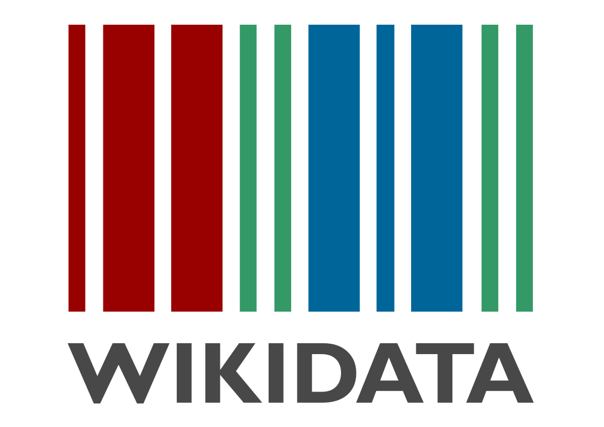
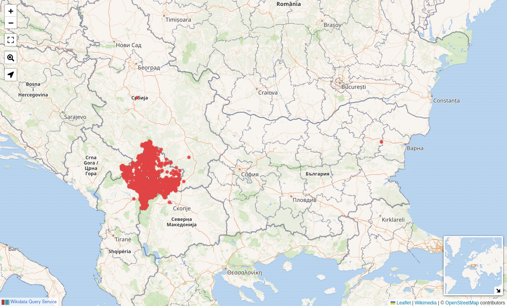
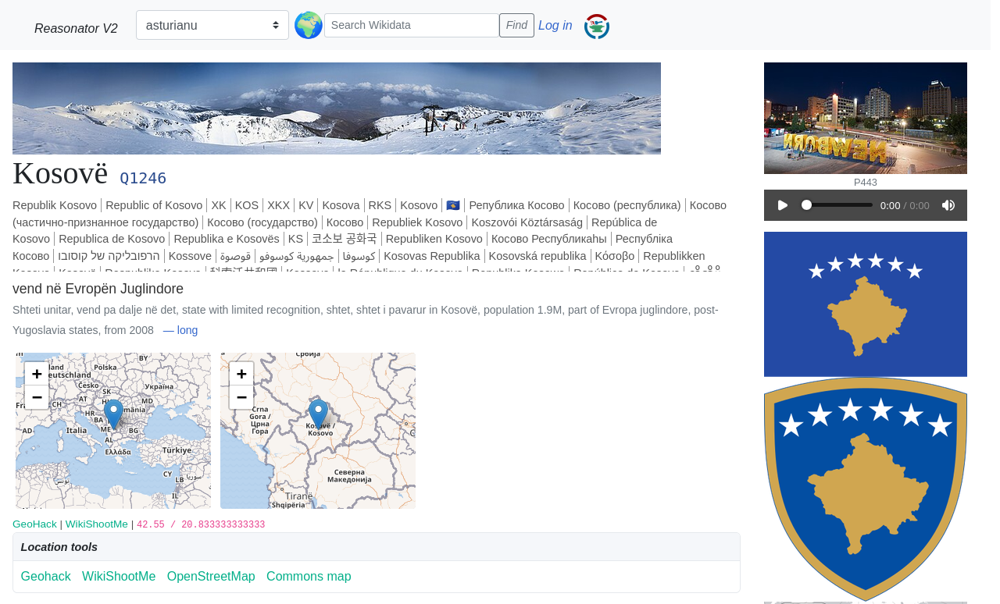
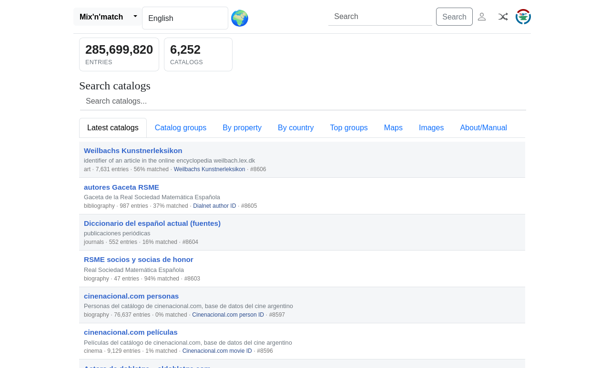

Vullnetarë që shkruajnë, përmirësojnë dhe lidhin dijen e lirë
në gjuhën shqipe dhe për të.
- Wikipedia në disa gjuhë, Commons, Wikidata, Wikivoyage
- Edit-a-thon-e, trajnime, fushata fotografike, ngjarje komunitare
- E hapur për të gjithë — mirëpriten fillestarët
Hyrje në Wikidata për fillestarë · ~10 min

Çfarë është Wikidata?
Një bazë dijesh e lirë, bashkëpunuese dhe shumëgjuhëshe
që kushdo mund ta lexojë dhe ta redaktojë.
- E lirë — të gjitha të dhënat janë CC0 (domen publik), ripërdorni kudo
- Të dhëna të strukturuara — fakte që i lexon kompjuteri, jo vetëm tekst
- Knowledge graph — njësi të lidhura me njëra-tjetrën përmes veçorive
- Shumëgjuhësh — një njësi, emërtime në qindra gjuhë
- Depo qendrore për Wikipedian, Commons dhe projekte të tjera të Wikimedias
Nisur në 2012 nga Wikimedia Deutschland · menaxhohet nga Fondacioni Wikimedia
Rreth Wikidata

- Njësi (Q) = një send ose ide
- Veçori (P) = si përshkruhet
- Deklaratë = njësi + veçori + vlerë (+ referencë)
Wikidata në numra
Wikipedia shqipe: ~106 500 artikuj · Burimi: API dhe Query Service i Wikidata, 29.10.2026
Aplikacionet më të mira të Wikidata
Brenda Wikimedias
- Infoboxes në Wikipedia — fakte të marra drejtpërdrejt nga Wikidata
- Lidhjet mes gjuhëve — një njësi lidh një artikull në të gjitha gjuhët
- Commons — etiketat "paraqet" lidhin fotot me njësi
Query Service — bëni pyetje, merrni harta dhe grafikë

query.wikidata.org · çdo pikë e kuqe është një njësi e Wikidata në Kosovë
Reasonator — pamje e thjeshtë e çdo njësie

reasonator.toolforge.org · të njëjtat të dhëna si faqja e njësisë, me harta, imazhe dhe flamuj
Mix'n'match — lidhni katalogë me Wikidata

mix-n-match.toolforge.org · një detyrë e mirë e parë për fillestarët: përputhni hyrjet me njësi
Puna teknike në Wikipedia
- Bote dhe mjete që mbajnë artikujt, kategoritë dhe të dhënat të sinkronizuara
- Infoboxes dhe lista të bazuara në Wikidata në Wikipedian shqipe
- Stampa, module dhe gadget-e për redaktorët vendas
Lajm: Wikimedia Hackathon 2027 — Tiranë
Një tubim global i zhvilluesve dhe vullnetarëve të Wikimedias, që vjen në Shqipëri.
Datat dhe regjistrimi: mediawiki.org/wiki/Wikimedia_Hackathon_2027
Plani për sonte
- Krijojmë llogari
- Bëjmë pak redaktime
- Hamë tortë dhe festojmë 🎂
Praktikë
Redaktojmë së bashku!